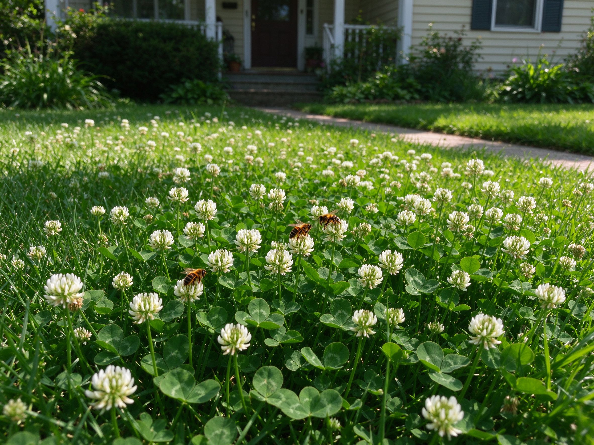

Clover and No-Mow Lawns: The Eco-Friendly Yard That Saves Water and Bees
The perfect green lawn is quietly being reinvented. After a summer of watering bans and shrinking bee populations, millions of gardeners are swapping thirsty grass for clover — a hardy ground cover that stays green in heat, feeds pollinators, and only needs mowing a few times a year. It's one of the fastest-growing yard trends in North America and Europe, and you don't have to rip anything out to start.
Why Clover Is Winning
- Drought-tolerant — clover's deep roots reach moisture grass can't, so it stays green when the lawn around it browns.
- Self-fertilizing — like all legumes, clover fixes nitrogen from the air, feeding itself and the grass beside it. No fertilizer needed.
- Bee-friendly — white clover flowers are a magnet for bees and other pollinators; see our pollinator garden guide for the bigger picture.
- Low mowing — it grows low and soft, needing only 2-4 cuts a season.
Two Ways to Get a Clover Lawn
Option 1: Seed into your existing grass
The easiest path. Aerate or rake the lawn lightly, scatter clover seed (about 100 g per 50 sq m / 1 lb per 500 sq ft) and keep it moist until it sprouts. Clover coexists happily with grass, gradually thickening over a season or two. This is the low-risk way to test it.
Option 2: Start a pure clover lawn
If you want a full clover yard, clear the area, rake the soil smooth, and sow a micro-clover or white clover seed mix evenly. Keep the surface damp for the first two weeks. It establishes fast and fills in within a season.
Caring for It the Easy Way
- Mow high and rarely — set the mower high (7-8 cm / 3 in) and mow every few weeks. Letting it flower part of the year feeds the bees.
- Skip the fertilizer — clover makes its own; fertilizer actually favors grass over clover.
- Water only in long dry spells — it bounces back from heat better than most lawns.
- Expect some grass — a few grass blades mixed in is fine and actually helps wear; pure clover patches can thin under heavy foot traffic.
Frequently Asked Questions
Will it attract bees and sting?
Yes, it attracts bees — that's a feature. Honeybees and native bees rarely sting while foraging; walking through the clover is safe for most people. If you're truly worried, keep the area nearest the door as grass and clover beyond it.
Is clover invasive?
White clover is a low, spreading perennial that stays put in lawns and is easy to pull if it reaches a bed. It's a natural, non-invasive choice compared to exotic ground covers — for more on working with nature, see our native plants guide.
Will it stain clothes?
The white flowers are modest and don't stain noticeably, unlike some vigorous weeds — see our natural weed control guide if other plants crowd in.
The Bottom Line
A clover lawn is the rare yard change that's better for you and the environment: less water, no fertilizer, more pollinators, and a fraction of the mowing. Start by scattering seed into a patch of grass this season and let it spread — by next year, "mowing the lawn" will feel like a different, much easier chore. Pair it with a few drought-tolerant plantings and your whole yard works with the climate instead of against it.